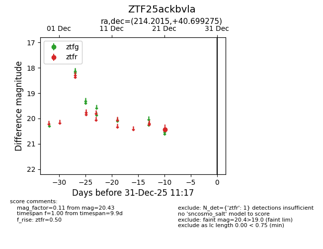
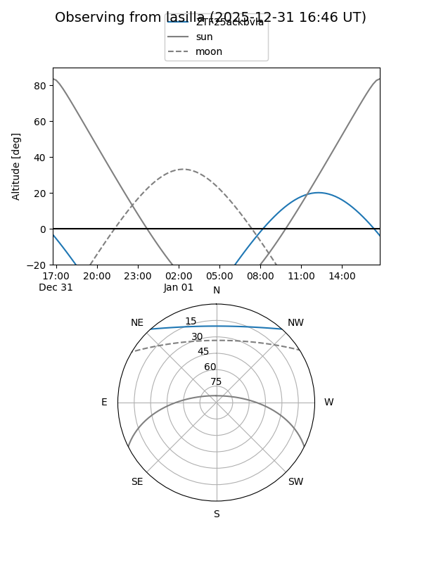
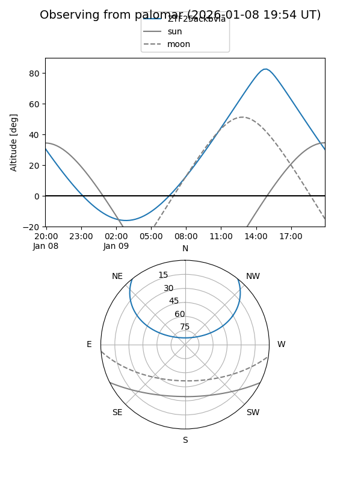

ZTF25ackbvla
Target ZTF25ackbvla at 2025-12-31 18:00
Aliases and brokers:
FINK: link
Lasair: link
ALeRCE: link
alt names
ZTF25ackbvla (ztf,fink_ztf)
Coordinates:
equatorial (ra, dec) = 214.2015,+40.69927
equatorial (HMS+DMS) = 14:16:48.36,+40:41:57.39
galactic (l, b) = (76.0498,+67.79072)
Flags:
Photometry:
last ztfr=20.43
1 ztfr detections
Lightcurve

Visibility


Additional plots